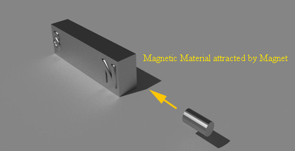
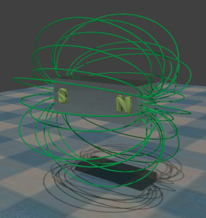
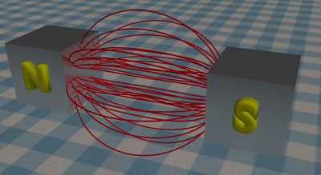
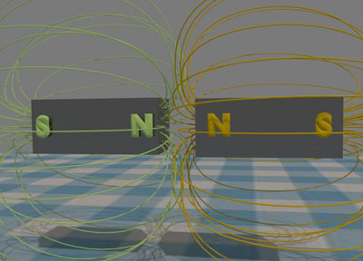

Magnetic Field
Magnetic Flux
Properties of Magnetic Flux
Difference - Permanent and Electromagnet
Advantages of Electromagnet
Magnetic Flux Pattern of a Solenoid
Unit of Magnetic Flux
Definition of Magnetic Flux Density
Magnetic Circuit
Magneto Motive Force(mmf)
Magnetic Field Strength
Permeability
Relative Permeability
Magnetic Material
All the materials in this universe may be classified either magnetic or non-magnetic. Magnetic materials are those which are affected by magnetic field and non magnetic materials are those which are not affected or slightly affected by magnetic field. Maximum types of materials fall under category of non – magnetic material. Non-magnetic material can further be classified as diamagnetic and paramagnetic materials. Some of the non magnetic materials exhibit very slight magnetic effect but it is extremely difficult to detect. Practically, all these materials are referred as totally non-magnetic. On the other hand, all the materials which exhibit magnetic effect strongly are referred as magnetic materials or ferromagnetic materials. The materials based on iron, cobalt and ferrites are normally ferromagnetic materials.

Magnetic Field

Magnetic fields can be created either by placing, a permanent magnet or by supplying electric current through a solenoid. Latter is electromagnet. A magnetic field is defined as the space surrounding a permanent magnet or electromagnet where the electric field is felt by other magnet or magnetic material.
Magnetic Flux or Magnetic Lines of Force
Magnetic field is also represented by lines of force as static electric field. These lines of force are referred as magnetic flux. When a unit magnetic pole is placed inside a magnetic field, it will experience both repulsive and attractive force, from similar and opposite poles of the magnet, respectively. The unit pole travels due to resultant of the repulsive and attractive force. The path through which the unit pole travels in the magnetic field is referred as magnetic lines of force. There are numbers of magnetic lines of force in a magnetic field, and these lines of force are collectively called magnetic flux. These flux lines have some specific properties that are described below.
Properties of Magnetic Flux or Magnetic Lines of Force
- They always form complete closed loops. Unlike lines of electric flux, which radiate from and terminate at the charged surfaces, lines of magnetic flux exist all the way through the magnet.
- They behave as if they are elastic. That is, when distorted they try to return to their natural shape and spacing.
- The lines of force of magnetic field are radiated from the north (N) pole to the south (S) pole.
- Flux lines do not cross or interact to each other.
Since the flux lines are something like elastic bands, the lines linking two unlike magnetic poles always try to shorten themselves. This brings two magnets together.

When two like magnetic poles are brought closer to each other, as the magnetic flux lines do not intersect each other, the magnetic flux lines of both magnetic fields are compressed. As these flux lines behave as elastic bands, they will try to expand to their normal shape. Hence, one magnetic pole will push away other magnetic poles.

Difference between a Permanent Magnet and an Electromagnet
A permanent magnet does not require any external electric supply to produce the field. But their magnetic field is normally weaker than that of an electromagnet. Hence, permanent magnets are relatively bulky in size. The strength of the field cannot be varied as per requirement. The field of these magnets are also not everlasting, it will be loosened over a period of time. They also lose their magnetism, if they get subjected to physical shock or vibration. Because of these many disadvantages, the applications of permanent magnet in the field of engineering are quite limited.
Green arrows show the direction of current
Advantages of Electromagnet over Permanent Magnet
In addition to the heating effect of electric current, it also produces a magnetic field surrounding the conductor carrying the electric current . The field strength is directly proportional to the current flowing through the conductor. Thus, by varying the current, a magnetic field strength of an electromagnet can be varied. It can be turned on or off by switching on or off the supply electric current , as when required. The direction of field can also be reversed by reversing the direction of electric current flowing through the conductor. Because of these many advantages, electromagnets are more suitably used in the field of engineering.
Magnetic Flux Pattern of a Solenoid
A magnetic field is a vector quantity. The field pattern produced by a electric current flowing through a straight conductor is illustrated in figures below.
Green arrows show the direction of current
The direction of the flux lines created around a electric current carrying conductor can easily be determined by Right Hand Grip Rule. If we hold the electric current conductor with our hand as shown in the figure, then the thumb will indicate the direction of electric current whereas four other fingers of this hand will indicate the direction of flux lines surrounding the conductor. Magnetic flux surrounds the whole length of the electric current carrying conductor. The flux pattern extends outwards in concentric circles up to infinity. Since, the magnetic field strength at a point in space, is inversely proportional to its perpendicular distance from the axis of the conductor, the field diminishes very rapidly with the distance. When a straight electric current carrying conductor forms a coil, it produces the flux pattern like a bar magnet. This is which we call a solenoid. The first figure shows the flux patterns produced by adjacent turns of the coil. However, since lines of flux will not intersect, the flux distorts to form complete loops around the whole coil as shown in second figure.
Green arrows show the direction of current
Unit of Magnetic Flux
The unit of this flux is the Weber (Wb). The unit was named in honor of German scientist Max Weber.
Definition of Magnetic Flux Density
The amount of flux crosses a unit area perpendicularly, in a magnetic field is known as magnetic flux density.
Hence, the unit flux density would be expressed as Weber per meter2. This unit of flux density is named as Tesla after the name of famous American scientist, Nikola Tesla. The quantity symbols for magnetic flux and flux density are ψ and B respectively.
Therefore, flux density,

Where, A is the area measured perpendicular to the flux lines.
Magnetic Circuit
A magnetic circuit is considered as the path in space through which magnetic flux passes. The figure below shows an iron-cored solenoid. When we supply DC through the solenoid, it will produce flux that's pattern is shown in that figure. Each flux line, as considered, initiated from N pole, passing through the air surrounding the magnet and finally reached to S pole and then from S pole it will come to the N pole through the iron core as shown. As each of the flux lines pass through the air as well as iron, this is called composite magnetic circuit. The lines of force inside the iron core are represented by numbers of uniformly spaced, paralleled lines. As a result the magnetic field within the iron core is uniform. These lines of force or flux lines through the airspace, are not equally placed at all points, hence, field outside the core is not uniform. In order to make the design and analysis of a magnetic circuit easier, it is desired to produce a uniform field. Instead of using a straight iron core, if we have used an uniform cross-sectioned iron toroid, ideally, there would not be any scope for magnetic flux lines to pass through air. As a result the magnetic field within the toroid core is uniform. This is referred as completely enclosed magnetic circuit.
Green arrows show the direction of current
Magneto Motive Force (mmf)
In an electric circuit, the electric current is caused due to presence of electromotive force or emf. Similarly, in magnetic circuit, flux is produced due to magneto motive force or mmf, presents in the circuit. Measuring an mmf for permanent magnets is quite difficult. But in case of electromagnet, it becomes quite simple and easy, when we consider the flux being produced by electric current flowing through a coil. When we consider each turn in a coil individually, it will have its own magnetic flux. The flux of individual turn collectively produces overall flux pattern of the coil. Thus, if the number of turns is more in a coil, the total amount of flux will be more. It is observed that the flux is directly proportional to the number of turns on the coil. The flux is also directly proportional to the value of electric current passed through the coil. Finally it can be said, the the flux is directly proportional to the product of electric current and number of turns in a coil. The magneto motive force or mmf is measured as the product of the electric current and the number of turns. The quantity symbol for mmf is F. As the electric current is multiplied by number of turns, the unit of mmf in SI system is expressed as AT where A signifies ampere, the unit of current, and T signifies the number of turns.
Magnetic Field Strength
Magnetic field strength signifies how strong the magnetic field is. Hence magnetic field strength is defined as the mmf per metre length of the magnetic circuit. Obviously, the unit of H is ampere turn/metre. The symbol for magnetic field strength is H. For calculating magnetic field strength or H, we have to divide total ampere turns by mean length of a magnetic circuit.
That is,

Where, l is the mean or average length of the magnetic circuit.
Permeability
The magnetic flux density at a certain point for a specific magnetic field strength depends upon the nature of media where the point is placed. In some medium flux is denser and in some medium flux is less dense for same magnetic field strength. The ratio of the flux density to the magnetic field strength is a constant for a particular medium and this ratio is called the permeability of medium. Free space or vacuum is also a magnetic medium and here the ratio of the flux density to the magnetic field strength is referred as permeability of free space. Its quantitative value is 4π X 10− 7 Henry / meter. The value of permeability of free space is used as the reference level from which the permeability of all other materials is measured. Just like, the potential level of earth is taken as reference voltage for measurement all other voltages.
Relative Permeability
By taking permeability of free space as unit, one can easily measure the permeability of any material. If he or she can correctly compare the permeability of a material with permeability of free space, then he or she can easily calculate the absolute permeability of that material. Suppose the permeability of a material is 2 times greater than permeability of free space. As we know that permeability of free space is 4π × 10− 7 Henry / meter. Hence, absolute permeability of that material would be 2 × 4π × 10− 7 Henry / meter = 8π × 10− 7 Henry / meter. This “2” is relative permeability of that material.
Similarly, suppose the permeability of a material is μr times than the permeability of free space. Hence, absolute permeability of that material would be μr × 4π × 10− 7 Henry / meter.
This μr is actually referred as relative permeability. This is nothing but ratio of absolute permeability of a material to absolute permeability of free space.
The same can also be explained as below,
Consider an air-cored solenoid with a fixed electric current flowing through it. The mmf will produce a certain flux density in this air core. If an iron core was now inserted, it would be found that the flux density would be very much increased. To account for these different results for different core materials, a quantity known as the relative permeability is used. This is defined as the ratio of the flux density produced in the iron, to that produced in the air, for the same applied mmf.

Where B2 is the flux density produced in the iron and B1 is the flux density produced in the air.
If the value of permeability of free space i.e. 4π × 10− 7 is represented by the symbol μo, then absolute permeability of any material can be represented as,

 by
by